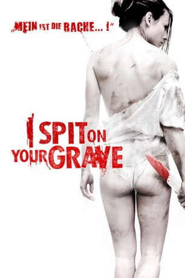

#3124 I Spit on Your Grave 1
 gesehen am 02.02.2016
gesehen am 02.02.2016
 
 IMDB-Wertung: 6.3 / 10
IMDB-Wertung: 6.3 / 10  Metascore: 27
Metascore: 27 
Die Schriftstellerin Jennifer Hills zieht sich in eine kleine Waldhütte zurück, um an ihrem neuen Roman zu arbeiten. Doch die Großstädterin missfällt mit ihrer Attitüde einigen Bewohnern einer nahegelegenen Kleinstadt. Als diese losziehen, um der Autorin eine Lektion zu erteilen, ist das der Beginn eines Wettlaufs ums Überleben. Was die Männer nicht ahnen: es geht auch um ihr Überleben.
Jahr: 2010
Dauer: 103 Minuten
FSK: Not Rated
Land: USA Studio: Anchor Bay FilmsTonspuren:
Untertitel:
Auflösung: 1080p (1920x1080) Größe: 5693 MB
Genre: Horror, Krimi
Regisseur: Steven R. Monroe
Drehbuch: Adam Rockoff, Meir Zarchi
Soundtrack: Corey Allen Jackson
Darsteller:
- Sarah Butler als Jennifer
- Jeff Branson als Johnny
 Andrew Howard als Storch
Andrew Howard als Storch- Daniel Franzese als Stanley
- Rodney Eastman als Andy
 Chad Lindberg als Matthew
Chad Lindberg als Matthew Tracey Walter als Earl
Tracey Walter als Earl- Mollie Milligan als Mrs. Storch
- Saxon Sharbino als Chastity
- Amber Dawn Landrum als Girl at Gas Station
- Michelle Tonjes als Girl in Truck , uncredited
Datei: X:\FSK18-Collections\I Spit On Your Grave\I Spit on Your Grave 1 (2010, FSKNot Rated, 1920x1080).mkv seit 01.02.2016
Festplatte: FSK18
 Es gibt insgesamt 9 Filme in der Gruppe 'FSK18-Collections\I Spit On Your Grave'
Es gibt insgesamt 9 Filme in der Gruppe 'FSK18-Collections\I Spit On Your Grave'